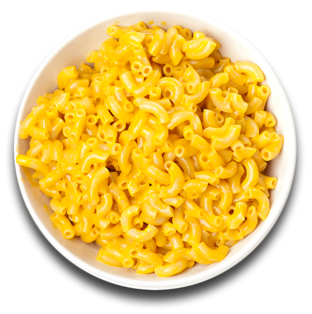

In this recipe you will be learning how to make macaroni and cheese. Now this is a very basic meal but if made right it can be enjoyed by yourself or with others. The reason I chose this food is because it's something I grew up with and enjoy to this day.
